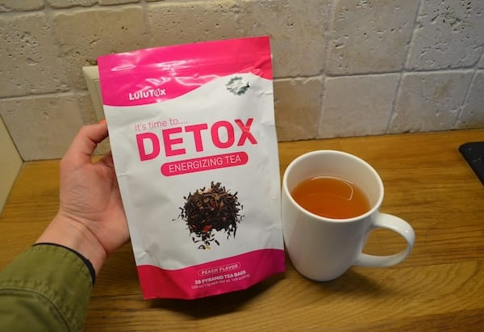
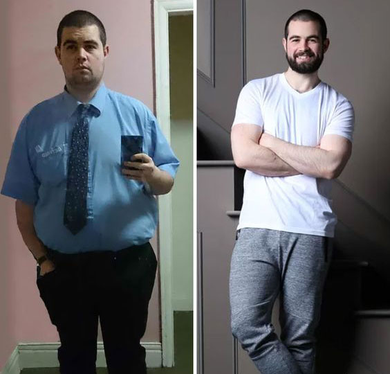
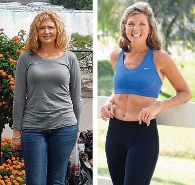

A "NEXT GENERATION DIET" that helps you lose up to 99.7% of your excess weight in just 15 HOURS has caused a wave of indignation among nutritionists and has caused some associations to FILE SUITs to ban it!
by Marilyn Galbraith
Weight Loss Expert
"We have achieved the impossible" — these are the words that sounded on the stage of the prestigious HealthAwards when the chief specialist of the Nutrition Center presented what is already being called "THE MOST DANGEROUS BREAKTHROUGH FOR THE WEIGHT LOSS INDUSTRY".
DIETITIANS IN SHOCK. FITNESS TRAINERS ARE FURY
It used to be IMPOSSIBLE to lose up to 30 pounds in 14 days without training, strict diets, or pills with side effects.
Today it is a REALITY, and the viral weight loss of 52-year-old Olivia Barrington from Texas has become a sensation on television and social media across the country.
After seeing Olivia's transformation, the American Association of Bariatric Surgeons demanded an "immediate investigation" into how a simple dietary supplement can replace surgeries costing between $8,000 and $20,000.

Just 2 weeks, and minus 14 kg — without diets, without a gym, without liposuction.
SECRET WEIGHT LOSS FORMAT THAT WAS HIDDEN FROM ORDINARY PEOPLE
18 months of testing in a private laboratory. 84 active ingredients approved in Switzerland. 11 nutritionists signed a non-disclosure agreement.
The result? The world's first weight loss formula that activates the body's "metabolic response" and starts intensive fat burning even during sleep.
"THE PHOTO THAT RUINED MY LIFE... AND THE SUPPLEMENT THAT GAVE IT BACK"
The story of Olivia Barrington touched millions of women.
"At my daughter's wedding, I was asked to hide behind everyone so as not to spoil the beautiful photo with my weight. And 2 weeks later I fit into jeans I hadn't worn since I was 30.

Six months ago, I had a moment that shattered my self-esteem. It was my daughter's wedding. The photographer looked at me and said something I will never forget.
The photographer was about to take a wedding photo after the ceremony. When he sat me down next to my daughter, he hesitated, looking confused. Then came the words that broke me: "Ma'am, could you stand in the back? Your extra weight will look bad in the photo."
The entire wedding party fell silent. My daughter squeezed my hand, tears welling up in her eyes. "My mom will sit next to me", my daughter whispered.
The photographer apologized profusely, but the damage was done. I spent the rest of my daughter's wedding hiding from the cameras and holding back tears in the bathroom.
After that night, I stopped looking at myself in the mirror. I hated seeing myself as a tired, bloated woman with a double chin and tummy tucks. The stress of caring for an ill mother for three years, 60-hour work weeks, and menopause had RUINED my appearance.
I couldn't even look at myself in the mirror for weeks after my wedding. I consulted with THREE plastic surgeons, and they all recommended the same thing: liposuction, a tummy tuck, and a chin lift for $21,500. It took SIX WEEKS of painful recovery. I almost said yes.
As a single mom who had just paid for her wedding, it seemed impossible. I was about to close my retirement account when my daughter's maid of honour called me to tell me what she had discovered. Then one day, my daughter's friend called me. She works at a nutritional centre and said:
— I got you a formula that was tested on celebrities. No one knows about it yet. Just try it...
Luis Santier Research Team
8:46 (12 minutes ago)
Dear Madame Olivia,
I am pleased to inform you that you have been selected to participate in the testing of an innovative weight loss product. This is a special new-generation formula created for fast and safe weight loss without diets, training and stress for the body.
I am convinced that this revolutionary formula will help you get rid of excess weight, remove fat deposits in problem areas and return your body to slimness and lightness - especially in the abdomen, hips and waist, for which this unique body shaping program was developed.
A highly concentrated slimming product has already been sent to the address you specified. In the next email, you will receive a confirmation, a link to track the parcel, detailed instructions for using the product and an additional testing plan.
I am delighted that you are part of the Luis Santier family and are part of a nutritional revolution that the world will soon know about.
Best wishes,
Lloyd Galbraith
"I thought it was another scam… but I woke up UNRECOGNIZABLE"
"They call it liposuction in a box", she told me. "The before and after pictures I've seen are INCREDIBLE."
I was extremely sceptical.
After 30 years of empty promises from diets and weight loss products, I had given up hope. But what did I have to lose?
That night, at 11:00 p.m., I drank my first cup of Lulutox Detox Tea as instructed and went to bed, unaware that my life was about to change.
The next morning, I barely woke up, dragged myself to the bathroom and turned on the light. What happened next is forever etched in my memory.
I GAGGED so loudly that I woke up my daughter in the next room.
I noticed that I had become visually slimmer. I checked it on the scale - minus 1.1 kg overnight! I thought it was water. But in a week I had lost about 7 kg.

The belly that I had been hiding under loose clothing had SIGNIFICANTLY SHRINKEN.
The sides that I had been unable to get rid of for years were ALMOST COMPLETELY GONE.
The sagging folds on my back and lower abdomen had NOTICEABLY TIGHTENED.
My body looked SLIMMER, and my skin had become SMOOTH and FIRM, as if I had lost not only weight but years as well.
I ran my hands over my waist in bewilderment - it had indeed become smaller, and the contours had become CLEAR.
My daughter came running, hearing my exclamation.
She froze in the doorway, her eyes widened. "Mom... WHAT HAVE YOU DONE?" — she whispered, not believing her eyes.
For the first time in many years, I LOVED MYSELF in the mirror — I didn't turn away, didn't hide, but SMILING.

And after 14 days, I fit into the dress I threw away 10 years ago!
The protruding belly that had been ruining my figure for years ALMOST COMPLETELY DISAPPEARED.
The unevenness and flabbiness in the hip area SMOOTHED OUT, and the skin became like SILK.
The sagging areas on my arms and waist TIGHTENED AND BECAME TIGHTER — as if someone invisible had performed an ideal figure correction without a single incision.
But the most shocking thing was that the fat rolls on my back that had been with me for DECADES simply DISAPPEARED.
On day 14, I looked so different that I decided to check something out.
I went to visit my sister, who lives across town. She sees me every month and knows every wrinkle on my face.
When she opened the door, she SCREAMED.
"Oh my God, Olivia! DID YOU HAVE LIPOSUCTION?!" she asked, literally pulling me inside to examine me.
"You look as SLIM as you did 20 YEARS AGO! Who did your surgery?!"
When I told her I hadn't had surgery and had just started drinking Lulutox Detox Tea at home, she refused to believe me until I showed her the package.
The transformation was so unprecedented that the scientific team that developed Lulutox Detox Tea asked permission to publish my results in medical journals.
And now, when I go out with my 28-year-old daughter, I regularly get compliments.
The photographer who spent six months trying to hide me in photos?
He recently took professional photos of me for work and asked if I had had "extensive bariatric procedures".
When I told him I had achieved all this thanks to Lulutox Detox Tea, he wrote down the name and ordered a couple of packs of tea for his mother that same day.
It's not just about looking slimmer, Lulutox Detox Tea gave me back my CONFIDENCE.
It gave me back the woman I still felt like inside.
I will be forever grateful for this gift."

THE SURGICAL GRADE FORMULA THAT'S 10x BETTER THAN $12,200 LIPOSUCTION SURGERIES
This revolutionary weight loss breakthrough works in FOUR powerful ways — and no surgical procedure can compare:
1. Burns up to 4 pounds of fat in the first 15 hours
The first area to "melt" is the most problematic — the belly. Lulutox Detox Tea's formula is clinically proven to activate brown fat and trigger thermogenesis from the very first dose. This means that weight loss is not due to water but to a reduction in the volume of adipose tissue. In 199 cases out of 200, women noticed a visually noticeable effect within the first 15 hours.
2. Works like an "internal lipo-laser": without surgery and injections
The patented fat-burning complex Lulutox Detox Tea (Goji berries, Sencha green tea, nettle leaves) acts as a "fat dissolver". It breaks down deposits even in those places where diet and exercise are powerless: stomach, thighs, back, and arms. The effect can be compared to laser liposuction, only without pain and a rehabilitation period.
The formula is especially effective for women with a slow metabolism, hormonal imbalance and age-related changes.
3. Blocks fat accumulation at the cellular level
During the day, the body receives dozens of signals to "store up". Especially - after stress, sleep disorders or overeating. Lulutox Detox Tea blocks these signals thanks to natural adaptogens and normalizes metabolism so that fat is no longer deposited "in reserve".
This provides both immediate results and long-term weight control - without returning the lost kilograms.

4. Restores a healthy figure and returns the "power of hunger"
Unlike diets that deplete, Lulutox Detox Tea enhances natural fat-burning mechanisms, restores hormonal balance and returns sensitivity to leptin - the satiety hormone.
As a result:
- Appetite decreases naturally, without effort;
- Craving for sweets and overeating disappears;
- Energy, lightness and a stable mood appear.

Dr. Lloyd Galbraith, a leading specialist in the field of metabolism and creator of Lulutox Detox Tea, explains why nutritionists are shocked:
"Our task was not to create another dietary supplement. We wanted to do the impossible: so that a woman could lose 10-15 kg without sports, diets and surgeries, without risk, without recovery time and the need for repeated procedures every 6 months. But at the same time maintain health, breasts and skin elasticity.
We have achieved this.
Clinical trials on 200 women aged 31 to 69 years have shown: already in the first 15 hours the weight decreases, swelling goes away and the waist size decreases and THEY COMPLETELY TRANSFORM within 10-14 days.
And in 14 days - up to minus 11 kg with no return. This is a real revolution that is turning the weight loss market upside down."
No diets, no sports, no breakdowns - only stable weight loss
Since the launch of Lulutox Detox Tea for free sale, thousands of women have shared their impressive "before and after" photos on the Internet:
Minus 6 kg in the first week. And I didn't even notice how I stopped eating at night!
My diet failed, but Lulutox Detox Tea saved me — minus 12 kg in a month without training and without feeling hungry!

I fit back into jeans that I haven't worn since 2012. My husband is delighted, and so am I!
It's magic. I'm 55, but my figure is now like a 30-year-old. Thank you Lulutox Detox Tea! ♥
The effectiveness has been confirmed by weight control clinics around the world.
According to forecasts, by the end of 2025, every third of women after 40 will give up diets and liposuction in favour of this formula.
IMAGINE: TOMORROW YOU CAN SEE LESS VOLUMES
Imagine that tomorrow morning you look in the mirror and see a reflection that you haven't seen for DECADES:
- Sides smoothed out
- Stomach became flat
- The face became thinner and more expressive
- Volumes disappeared, but breasts remained
- On the scale - minus
Imagine putting on a tight dress without shapewear - and your body looks BETTER than before under layers of clothing hiding the excess.
Imagine saving THOUSANDS on nutritionists, trainers, supplements and procedures, but at the same time getting the BEST results. This is without sweating in the gym, without breakdowns, without counting calories and stress for the body.
LIMITED ACCESS: DIET CENTERS AGAINST
Due to huge demand and pressure from weight loss clinics to limit access to this revolutionary formula, the Lulutox Detox Tea formula often sells out in a matter of hours.
But now, by order of Dr. Lloyd Galbraith, a limited offer is open exclusively for readers of this article.
If you want to say goodbye to fat traps forever and experience the same results as thousands of women, take part in the promotional offer and get Lulutox Detox Tea at a discount right now.
The daily quota usually sells out within a FEW HOURS, so act now before this opportunity disappears.
Where can I buy Lulutox Detox Tea?

Terms of purchase of Lulutox Detox Tea under the discount program:
1. Only for personal use.
This is a protective measure against intermediaries trying to place large orders for Lulutox Detox Tea and then resell them at a high profit.
2. Order through the official website of the program.
The official website offers a manufacturer's price guarantee and protection from intermediaries. For your convenience, we have added a form below.
To do this, take a short test of 3 questions. Your answers will help the manufacturer make the product even more effective, and you will receive a discount on Lulutox Detox Tea. Currently, the demand for the product is unprecedentedly high. Therefore, the manufacturer was forced to set time limits for the promotion. You can take part in the promotion until December 10, 2025 inclusive.
Important! Studies have shown that winter is the best time to take Lulutox Detox Tea. Due to the stabilization of the average temperature, metabolic processes in the body accelerate, and the effect of the product is enhanced many times over. Weight loss occurs 37% faster than in other periods of the year.
Answer 3 questions and get a 70% discount on Lulutox Detox Tea!
Thank you for your answers!
1. How many kilograms do you want to lose?
Comments


Rosalind Adamson
I started drinking this tea, ate everything I liked, and lost 9 kg. I think Lulutox Detox Tea is the best among what I've come across for weight loss, and the best thing is that you don't have to torment yourself in the gym, I don't have the time or desire for it. This solution is just perfect for people like me! I recommend it!

Maureen Hardman
I ordered a course on Lulutox Detox Tea. I've gained a lot of weight lately, I need to do something. Diets and sports don't help, I already weigh 95 kg. It's awful, of course, I hope that this Lulutox Detox Tea will help me!
Lorraine Ferguson
Interesting article and product. But it is not yet clear how it works.

Susan Gonzalez
It is very convenient to drink - just one cup of tea a day before meals, I have just started, but I have already seen results) I answered several questions and received a discount! Everything is honest. And you can immediately see that the approach is good and thorough. Since they also conduct surveys, it means that they are interested in people getting results. Bravo!

Lucy Bargeman
Answered the questions honestly and received a fair discount, thank you!
Maud Farmer
And I got a discount, yay!

Connon Ferguson
There were no complications. Every time I took Lulutox Detox tea, my body and mind improved. This product not only makes me slim and lose weight but also heals me. It is truly a MIRACLE. Too bad this product will never be available in pharmacies again... Poor Americans...

Catherine Clifford
Ooo!! Lulutox Detox Tea is mine! I love it so much. I couldn't find it anywhere for a long time, at one time a doctor gave me a link to order, and I lost it... So thank you very much for such an interesting article. I passed the test, and got a discount!)
Anthony Dickinson
Before I started taking Lulutox Detox Tea, I weighed a whopping 106 kg. I was always slim, but with age, my belly and sides gradually appeared. At 25, I realized that I urgently needed to get organized. I devoted myself to training for almost a year, but I could not achieve my normal shape. Then I accidentally found out about Lulutox Detox Tea and literally in a few weeks I turned into the person I always wanted to see in the mirror. Now I take care of my figure, and Lulutox Detox Tea is always on my shelf.

Kate Carrington
Lulutox Detox Tea suited me well too. Now I can brag about it as I want;) 13 kg in a month and a half. I'm continuing in the same spirit;)
Wendy Gerald
Have you tried simply stopping eating? Well, when children are involved, it's understandable, they give it to you and you eat it. But now they're grown women, can't you control yourself and just not eat it?
Holly Clapton
I was surprised that you wrote that only nutritionists and endocrinologists know about Lulutox Detox Tea. I've been drinking it regularly for 2 years now. At first, as soon as I started drinking it, I lost 14 kg, and now I just use it for prevention and vitamins, it's a natural plant concentrate. By the way, my friends have also known about it for a long time, so it's not just your secret)) BEFORE AND AFTER PHOTOS

Deborah Barrington
What a great promotion they came up with. Answer the questions and get a discount. They conducted a survey, and for that, they gave us a discount, awesome))
Linnett Bargeman
Girls! I urgently need to lose 9 kg! I sat at home for six months and didn't notice how much weight I gained. What should I do!!?? SOS!! I can't stick to diets, I have no willpower, then I break down and eat even more. The gym is not for me either, I'm lazy and bored...
Abigail Gilbert
Thank you to everyone who writes reviews and shows photos! Your results give me hope! I want to change and nothing has worked for many years. No matter how much you lose, the same amount will come back.
Emily Fulton
I also looked at the before and after photos. This is cool! I'm waiting to leave the same comment. In the meantime, I'm just unpacking my package.

Misty Thomas
Has anyone tried this yet?